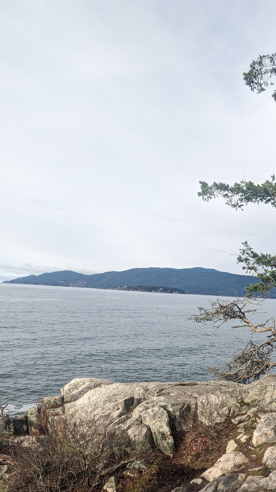
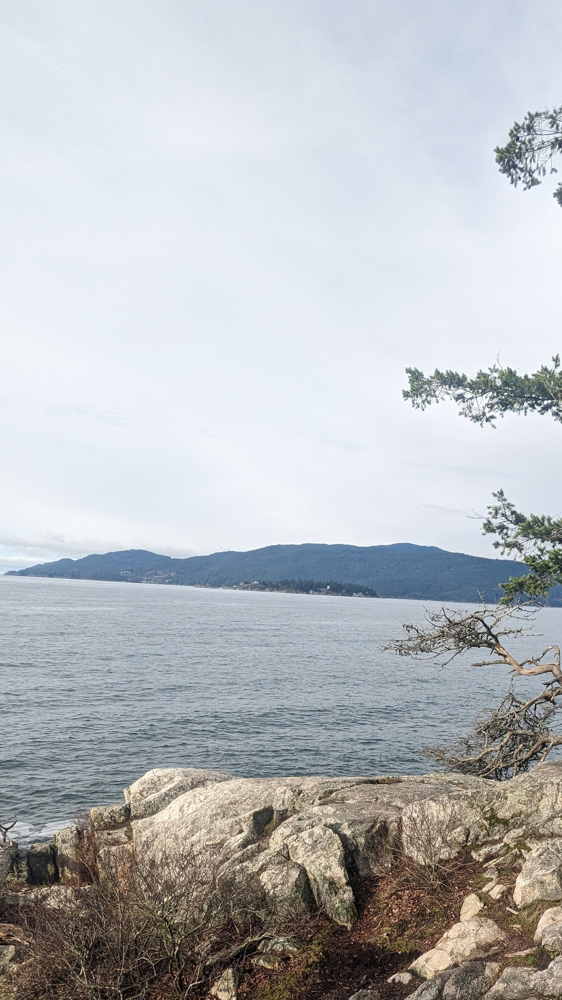

Lighthouse Park
Completed on 04/02/2024
 X

X

Multiple easy trails with nice views in this park of West Vancouver. Up to 6 km with minimal elevation.
Multiple easy trails with nice views in this park of West Vancouver. Up to 6 km with minimal elevation.
Public Transit Option: Take the #250 bus (Horseshoe Bay) from Downtown Vancouver and get off at WB Marine Dr @ Beacon Lane. Walk about 15 minutes to the park.
See In Maps